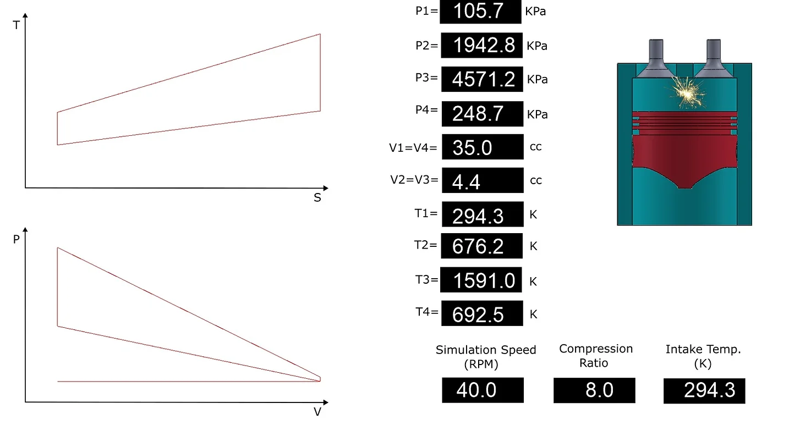

Advanced Programming Project Using C++
The objective of this project was to simulate a 4-stroke engine for the Capstone project.
- Generating the main concepts and expressions/functions of the PVTS class, which is the class that generates the PV and TS diagrams of the Otto Cycle.
- Prepared some formulas and functions for the other classes (like the ENGINE and INTER) to make sure everything is compatible with each other.
- My colleagues and I worked on finding and generating the algorithms needed, like the movement of the piston.
- Finding the right timing for the valves and spark with the help of my colleagues.
- Implemented some important functions and codes in the main function.
- Added a sound effect for the combustion using memory buffer to store the data from the sound file and play the sound from the buffer (because it is faster).
